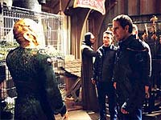
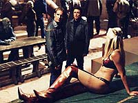
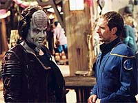
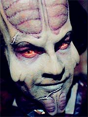

|
MANCHETE
DO EPISÓDIO
Segmento
retoma arco com história
regular e sensualidade à flor da pele
Episódio
anterior | Próximo
episódio
Sinopse:
O Conselho Xindi discute os últimos avanços na construção da arma que terá por objetivo destruir a Terra. O cientista-chefe do projeto, Degra, diz que precisará de mais tempo para concluir o dispositivo, além de mais informações sobre os humanos. Relutantemente, e aflito pelas andanças da Enterprise pela Extensão Délfica, o conselho concorda em dar o tempo pedido.
Enquanto isso, na Enterprise, Trip Tucker mais uma vez se submete à terapia de neuropressão de T'Pol. Ele comenta que as sessões estão provocando comentários indesejados entre os tripulantes, que acham que algo está acontecendo entre eles, e diz que gostaria de interromper os encontros. T'Pol convence-o de que isso não é necessário, e ele acaba cedendo.
 O capitão Archer, em contrapartida, se prepara para negociar com um químico, que tem uma loja num planeta quase totalmente oceânico, uma fórmula para sintetizar Trellium-D, a única substância que pode proteger o casco da Enterprise das distorções espaço-temporais da Extensão Délfica.
Chegando ao planeta, Archer, Trip e Reed iniciam as negociações com o químico, de nome B'Rat Ud, ao que o comerciante diz concordar em ceder a fórmula, por um preço razoável. Também se oferece para apresentá-los a outro mercador que teve contato recente com os Xindis. Enquanto ele fica negociando com Trip sobre o preço dos serviços, Archer e Reed vão ao encontro do tal mercador --Zjod, que na verdade é o administrador do prostíbulo local.
O alienígena tenta empurrar algumas mulheres para os tripulantes da Enterprise, mas se recusa a dar informações sobre os Xindis. Quando Trip vai de encontro a Archer para dizer que fechou negócio com B'Rat, o capitão desiste de obter informações com Zjod. Mas ele não conta com a corrida de uma das prostitutas escravas, que implora que ele a ajude a fugir dali. Para defendê-la, Archer entra numa briga com o dono do prostíbulo, mas todos conseguem escapar ilesos de volta à Enterprise.
Lá, Rajiin, a prostituta-escrava fugitiva, agradece o esforço e diz que servirá bem ao capitão. Archer recusa a oferta, dizendo que seu povo não acredita que uma pessoa pode ser propriedade de outra e prometendo se esforçar para levá-la a seu planeta natal.
Mas a alienígena se mostra muito mais do que uma mulher sedutora. De algum modo, ela consegue rastrear e registrar informações sobre a biologia e a fisiologia dos organismos com quem mantém contato. Numa tentativa de seduzir Archer, ela se aproveita da situação para obter informações sobre seu organismo.
Em outra parte da nave, T'Pol e Tucker tentam usar a fórmula para a síntese de Trellium-D, obtida em troca de especiarias da Terra, mas tudo que conseguem é produzir uma explosão --o procedimento é extremamente delicado.
Após "obter leituras" de Archer, Rajiin visita a sala de transporte, onde usa seu poder irresistível de sedução contra Hoshi Sato. Finalmente, ela vai até os aposentos de T'Pol. A Vulcana tenta resistir, mas também fracassa. Trip Tucker, que estava chegando naquela hora aos aposentos da oficial de ciências, encontra T'Pol desacordada, mas é nocauteado por Rajiin antes que possa fazer alguma coisa.
 A mulher foge correndo e, com um comunicador, abre contato com uma nave alienígena de identidade desconhecida. Os tripulantes da Enterprise, por sua vez, iniciam uma corrida para capturá-la. Ela vai até a sala de transporte e está prestes a fugir quando é rendida por Archer, que a envia para a prisão.
Ao interrogá-la, ela resiste a fornecer informações sobre suas reais intenções e seus empregadores. Mas logo tudo fica claro, quando a Enterprise se vê sob ataque de duas naves tripuladas por Xindis reptilianos. Rajiin então revela que foi enviada para obter mais informações, para o desenvolvimento de uma arma biológica contra os humanos.
A nave fica indefesa e é abordada. Após uma violenta troca de tiros, os Xindis conseguem resgatar Rajiin da prisão e levá-la com eles. Embora Archer ordene que a Enterprise parta em perseguição, as naves Xindis somem por um vórtice, sem deixar vestígios. Aos tripulantes só restou analisar as poucas informações que obtiveram do encontro --uma das armas portáteis Xindis, mais um cadáver reptiliano e leituras das naves inimigas.
No Conselho Xindi, diante de mais súplicas de Degra por mais tempo, os Xindis reptilianos apresentam Rajiin com seu mais novo trunfo: informações sobre o organismo humano, para que seja possível perseguir o desenvolvimento de uma arma biológica. Apesar do sucesso da missão de espionagem, os reptilianos levam uma reprimenda pelo ato de insubordinação e por tornar público que os Xindis estão acompanhando os passos da Enterprise na Extensão Délfica.
Comentários:
"Rajiin" é um episódio que tenta retomar o principal arco relativo aos Xindis, após o ligeiro desvio em
"Extinction". E, apesar de não haver relação alguma entre duas histórias, foi um toque inteligente fazer referências aos eventos ocorridos no episódio anterior (Archer ainda está se recuperando dos efeitos de ter sido transformado num alienígena em sua última aventura). É um sinal de que os produtores estão realmente dispostos a conduzir um arco contínuo.
Isso é muito pouco para garantir uma real continuidade, mas é um sinal de boa-fé. Adicionado à retomada da principal linha do arco, com as cenas no Conselho Xindi, o segmento ajuda a audiência a trazer seu foco de volta ao que havia acontecido nos episódios anteriores.
Apesar disso, "Rajiin" também é um segmento que se sustenta muito bem por si mesmo. Ele costura o elemento da busca por Trellium-D pela Enterprise --uma necessidade apresentada nos dois primeiros episódios da temporada para a sobrevivência na Extensão Délfica-- com as ações dos Xindis no sentido de limitar o campo de atuação dos humanos e obter os dados necessários à construção de sua arma.
 O episódio fica totalmente centrado na figura de Rajiin, a enigmática mulher que vem a bordo da Enterprise depois de ser "resgatada" por Archer. É bem verdade que o fato de que a mulher tem algo sinistro fica estampado na cara da audiência desde o primeiro minuto, mas o trabalho feito com a personagem é suficiente para não colocar todo o episódio a perder. A atriz Nikita Ager, se não é extremamente talentosa, ao menos conseguiu ser minimamente convincente.
O episódio apresenta um dos raros momentos em que a sensualidade funciona a favor do roteiro, e não simplesmente como um aperitivo para os adolescentes de plantão. Até mesmo as cenas mais agressivas e sugestivas de lesbianismo "cabem" no episódio. E sua execução é tal que ainda mantém (alguma) dignidade sobre a seriedade do segmento.
 Apesar do trabalho com os personagens alienígenas
(Enterprise parece estar ficando especializada em retratar "ETs exóticos e trapaceiros encontrados pela NX-01", com as figuras apresentadas até aqui), infelizmente eles não dizem muito a que vieram. São apenas elementos de uma trama que, em última análise, se propõe a ser ação pura.
Os poderes de Rajiin não são explicados em momento algum, nem mesmo por Phlox, que a examinou. E o suposto conflito interno da mulher, lamentando por Archer, admirando-o e ainda assim o traindo, não é suficiente para adicionar texturas tridimensionais à personagem.
Restam então os valores de produção. A maquiagem dos alienígenas continua sendo estado da arte, e o planeta-água visitado pela Enterprise é lindo, para dizer o mínimo. A trilha sonora também é mais audaz do que a média das composições modernas de
Jornada nas Estrelas para TV, feita por Paul Baillargeon. A direção, mais uma vez sem muito brilho próprio, mas conduzida de forma competente, ficou por conta de Mike Vejar.
O resultado final é uma grande derrota para a tripulação da Enterprise, que não consegue impedir os atos de espionagem dos Xindis e parece mais vulnerável do que nunca. De certo modo, é um ótimo modo de criar um gancho para a continuação do arco nos próximos episódios. Ainda assim, é impossível não notar que falta substância para tornar o desdobramento da história mais interessante e menos previsível.
Por si mesmo, "Rajiin" é um episódio capaz de entreter e que oferece alguns desenvolvimentos pessoais para os tripulantes da Enterprise (Archer mais uma vez começa a perder as estribeiras com seus prisioneiros, reforçando o comportamento destemperado em
"Anomaly", e a dupla T'Pol e Trip finalmente responde por seus atos com as sessões de neuropressão). Ainda assim, nada realmente muito digno de nota.
Citações:
Phlox - "You were transformed into an alien species. Don't expect to recover overnight."
("Você foi transformado numa espécie alienígena. Não espere se recuperar da noite para o dia.")
Reed - "After an hour in this place I can't wait to get back to decon."
("Após uma hora nesse lugar eu mal posso esperar para voltar à descontaminação.")
Rajiin - "There's more to these humans than you can learn from a set of biometric scans."
("Há mais sobre esses humanos do que vocês podem aprender de um conjunto de leituras biométricas.")
Trivia:
 O episódio inicialmente foi chamado de "Enemy Advances".
O episódio inicialmente foi chamado de "Enemy Advances".
O
nome da personagem que deu o título final foi modificado, e em um dado momento chegou a ser "Raijin".
O cenário da feira alienígena -- que incluiu ruas laterais e outras partes -- foi construído para parecer como uma cidade flutuante a partir de plataformas, navios e barcas. Na pós-produção, o time de efeitos especiais criou o cenário ao fundo, mostrando-o como uma ilha artificial num mundo oceânico.
A fotografia principal consumiu sete dias, concluídos em 7 de agosto de 2003.
Dominic Keating, numa convenção, disse o seguinte sobre a atriz Nikita Ager: "Essa garota é QUENTE! Eu esqueci minhas linhas algumas vezes".
Rick Worthy, Randy Oglesby, Scott MacDonald e Tucker Smallwood apareceram como os Xindis do Conselho em
"The Xindi". Eles também fizeram aparições anteriores em
Jornada nas Estrelas.
Dell Yount apareceu como Tilikia em "The Sons of Mogh"
(Deep Space Nine).
Ken Lally apareceu antes em "Anomaly".
Ficha
técnica:
História de Paul Brown e Brent V. Friedman
Roteiro de Brent V. Friedman e Chris Black
Direção de Mike Vejar
Exibido em 01/10/2003
Produção:
056
Elenco:
Scott
Bakula como Jonathan Archer
Jolene Blalock como
T'Pol
John Billingsley
como Phlox
Anthony Montgomery
como Travis Mayweather
Connor Trinneer como
Charlie 'Trip' Tucker III
Dominic Keating como
Malcolm Reed
Linda Park como Hoshi Sato
Elenco convidado:
Nikita Ager como Rajiin
Tucker Smallwood como Xindi-Humanóide
Randy Oglesby como Degra
Rick Worthy como Xindi-Arbóreo
Scott MacDonald como Xindi-Reptiliano
Steve Larson como Zjod
Dell Yount como B'Rat Ud
B.K. Kennelly como mercador alienígena
Ken Lally como segurança
Episódio
anterior | Próximo
episódio
|